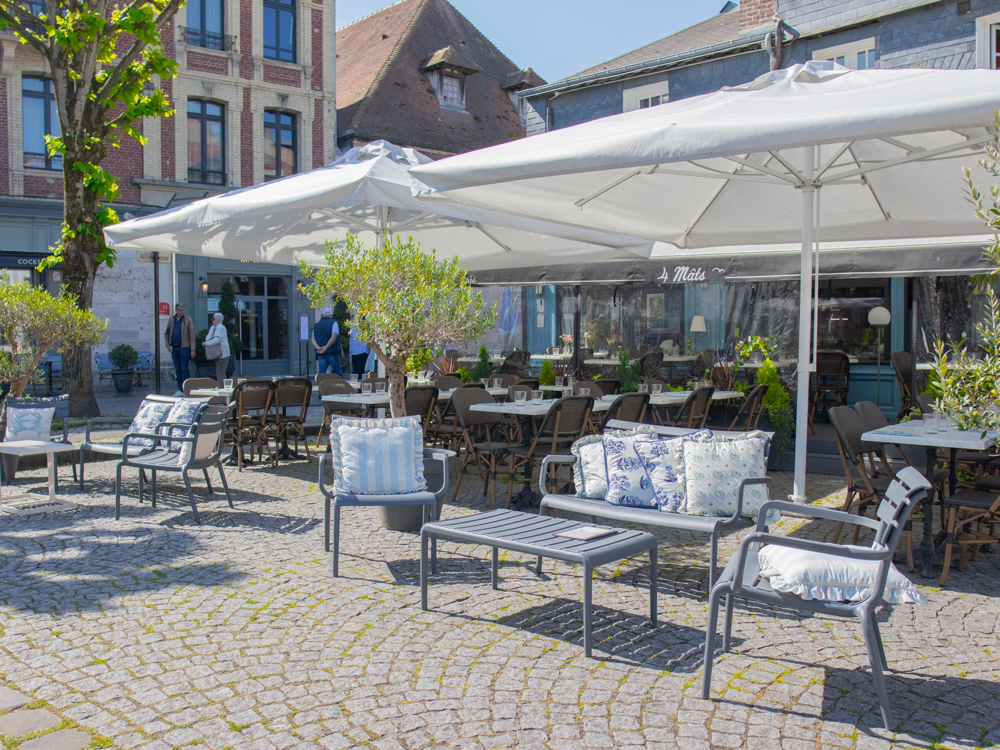

Paul et Jade, la trentaine, la même passion du produit vivant. Le restaurant qu'ils avaient envie de trouver quand ils venaient à Honfleur. Alors ils l'ont fait.
Paul est en cuisine. Il a fait ses classes à Paris puis à Bordeaux, avant de revenir sur la côte. Il aime le feu, la braise, les pièces à partager et la liberté de changer la carte chaque matin.
Jade est en salle et à la cave. Elle a un faible pour les vins de Loire, les appellations confidentielles et les conversations longues. Elle dirige le service avec la même précision tranquille que Paul en cuisine.
Autour d'eux, une petite équipe fidèle. Un seul credo : que chaque soir ressemble à une invitation.
La carte change avec la marée parce qu'elle dépend des bateaux du port. Nous travaillons avec trois chalutiers locaux qui nous livrent chaque matin.
Le matin, Paul descend au quai. Il choisit ce qui est arrivé. Il décide la carte du soir en remontant au restaurant.
C'est un luxe simple. C'est tout ce qui compte.
